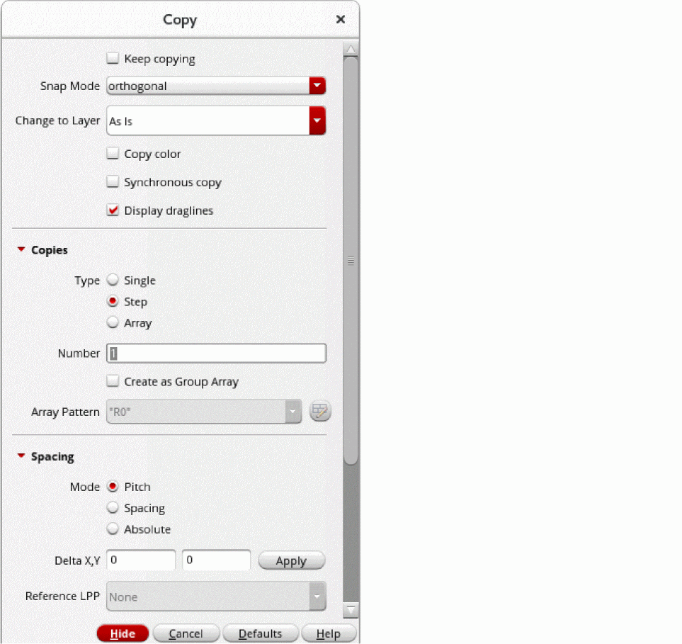

Copying an Object
-
In the layout window, choose Edit – Copy or click the Copy icon
on the Edit toolbar.
Alternatively, right-click an empty space on the design canvas and choose Copy from the Layout shortcut menu. -
Press
F3to open the Copy form.
 - Select the Keep copying check box if you want to create multiple copies of an object.
- Select an option from the Snap Mode list based on the direction in which you want to move the copied object.
- Select a layer-purpose pair from the Change to Layer list if you want to copy an object to a different layer.
-
Select the Type of Copies you want to create. For example, select Array and specify the number of rows and columns if you want to create an array of copied objects.
For information about creating a group array, see Creating a Group Array by Using the Copy Form. - Optionally, select Copy connectivity if you want to copy the connectivity information on a path, pathSeg, fluid guard ring, or via to the new object.
- In the Chain Mode list, select the appropriate option if you want to copy a chain of instances.
-
On the design canvas, select one or more objects by using either of the following methods:
-
To select a single object, click it. Alternatively, you can select an object by specifying the points at which the object is placed on the design canvas by using the Enter Points form. To select multiple objects, hold down the
Shiftkey and click the required objects, one at a time.
A copy of the selected object appears on the design canvas, attached to the pointer. This copy stays attached to the pointer and moves when you move the pointer. The Copy command prompts you to click at the location where you want to place the copy. -
Drag the pointer over the objects you want to select. You can add more objects to the selected set by holding down the
Shiftkey and then clicking the required objects or by dragging the pointer over the required objects.
The Copy command prompts you to click on the canvas to specify a reference point.
-
To select a single object, click it. Alternatively, you can select an object by specifying the points at which the object is placed on the design canvas by using the Enter Points form. To select multiple objects, hold down the
-
Click on the design canvas to place the copy. Alternatively, you can specify the points at which you want to place the copy using the Enter Points form.
If you copy a parent object, copies for all its child objects are created, whether or not you select the child objects individually. In pre-selection mode, the copies of the parent and all the child objects remain selected after you place them on the design canvas. -
Press
Escor click Cancel in the form to finish copying.
The following example illustrates the creation of multiple copies of pinA on Metal1, where the copies are placed on different layers, Metal3 and Metal4. In the Copy form, you select the Keep copying check box, set Snap Mode to anyAngle, and set Change To Layer to Metal3. On the canvas, when you select pinA, a copy of the pin attaches to the pointer and pinA remains selected.
You need to click on the design canvas to place the first copy. Notice the change in the layer-purpose pair of the copy you place. Copy remains attached to the pointer.
You need to click on the design canvas to place the second copy, also on Metal3.
Next, you press F3 to display the Copy form and select Metal4 from the Change To Layer list. As a result, the next copy is placed on Metal4 when you click on the design canvas to place the copy. Press Esc to finish creating the copies.
If the enableCopyAndPaste environment variable is enabled, then when using the Copy command, the selected objects and the reference point are automatically stored in the buffer after the reference point for the copy command has been specified. You can use the Paste command to paste the objects stored in the buffer. The Copy and Yank commands use the same buffer to store objects.
Related Topics
Return to top